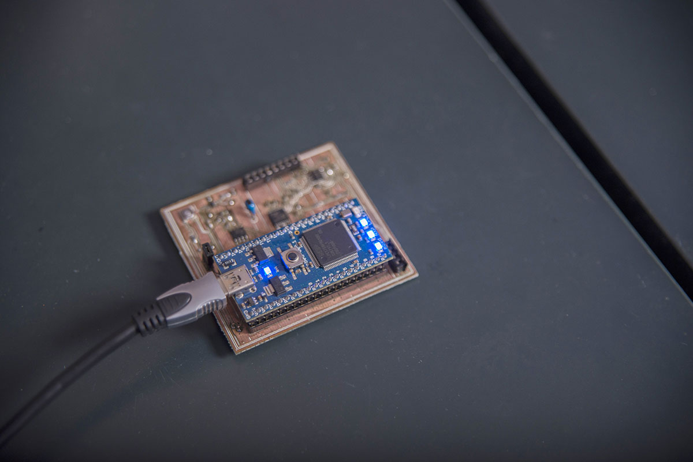

Quick Diagnosis
by Whitney Heins October 3, 2014
Disease detection technology ready for the marketplace
An innovative disease detection technology developed by UT Knoxville and UT Institute of Agriculture researchers is on its way to the marketplace.
Meridian Bioscience Inc. has entered into a technology and commercial license agreement with the UT Research Foundation for the development of the technology that could result in low-cost, point-of-care disease detection using a portable device. Meridian Bioscience is a life science company that manufactures, markets and distributes a range of diagnostic test kits and other technologies.
Developed by Jayne Wu, associate professor of computer science and electrical engineering in the UT Knoxville College of Engineering, and Shigetoshi Eda, associate professor in the Institute of Agriculture Center for Wildlife Health within the Department of Forestry, Wildlife and Fisheries, the device can be used on site to detect infectious diseases, pathogens and physiological conditions in people and animals.
“As we see with the current Ebola outbreak, time is so important in successfully treating and preventing infectious disease outbreaks,” says Wu. “This device has the potential to save a lot of lives by saving time in detection.”
Rapid detection allows physicians to diagnose and provide treatment on the first visit, which is a valuable advantage, especially in developing countries where people do not have easy access to medical facilities.
Wu gives the following scenario: “Today, you go to a medical doctor, give blood and wait days for results. And, while waiting, you can get sicker, and you can infect more people. With this device, you give blood and get results almost instantaneously and can begin treatment.”
The device also will save money because the samples do not have to be sent to a lab and scrutinized by technicians. It can be used by any health-care professional anywhere.
“The majority of the current diagnosis costs $10-$100 per sample and requires costly equipment to run a test. Our device will provide a much cheaper option. The costs to us are $2 per test and $200 for the device,” says Eda.
All the device needs to work is a droplet of blood or another bodily fluid. The fluid is then placed on a microchip within the device. The microchip is treated with disease-specific antigens—a toxin or other foreign substance that induces an immune response in the body—and captures disease-specific antibodies in the blood. If the antigens and antibodies match, the device tells the health-care provider that the patient or animal is infected. This happens in a matter of one to two minutes.
In addition to rapid detection of pathogens for infectious diseases, the technology will make a range of tests available for office and emergency room visits.
“For example, it could be used for screening and monitoring the progression and treatment outcome of cancers,” says Wu. “I have several medical doctors come to me and ask if this device can be used to check patient’s blood for drugs before analgesic procedure, organ compatibility before a transplant operation or bloodstream diseases before an operation. It can also be used to monitor people’s physiological conditions, such as stress level.”
So far, the device has been tested for detecting human influenza A and tuberculosis in people, as well as Johne’s disease in livestock. Johne’s disease is highly prevalent in this country and causes more than $200 million of annual losses to the U.S. dairy industry. Since there is no practical treatment for the disease, early diagnosis is critically important for disease control in dairy farms. This, in turn, helps farmers’ businesses and the milk supply.
Rapid detection also will help wildlife management personnel take immediate actions in the field such as removal of the infected animals or to confirm the presence of dangerous infections such as rabies.
The device is capable of detecting pathogens or their antigens, making it highly versatile. The scientists expect use to be expanded to detect various diseases and physiological conditions.
Prior to the agreement, the researchers performed a number of tests on the device for Meridian Bioscience and found that it is up to a thousand times more accurate than the current flu test kits on the market.
“We want this research to make a difference in society, and we need help from business partners,” says Wu. “Meridian Bioscience can move this forward, and we are all very excited.”
The researchers and the company hope for their invention to hit the marketplace within two years.